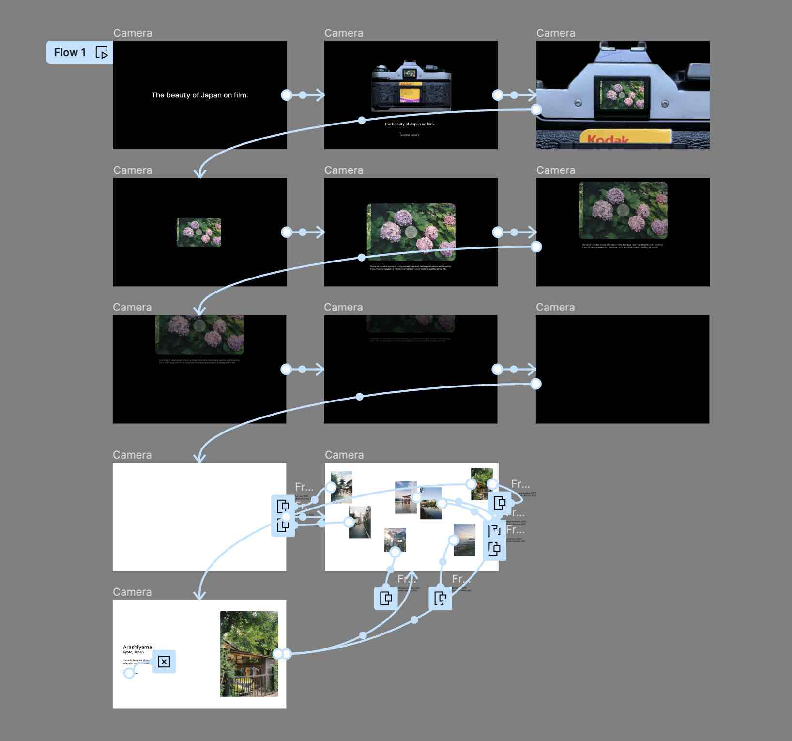

Final Project Design Comp
Prototype
I created a hi-fidelity prototype in Figma to test with users and improve the UI/UX of my Every Picture Project.
To improve the UI/UX, I plan to increase the affordance by providing instructions about how to navigate the site. On the landing page, I added a note telling the user to scroll to explore.
To reduce cognitive load, I altered my designs so that the photographs do not become visible until after the camera animation is completed. Additionally, when a user hovers over an image, it triggers a background overlay, making it more visible to the user when they are hovering over a specific image.
To improve overall storytelling and the narrative, I added the ability for users to click on an image to read an extended description. From there, they can close the overlay or click to the next image.